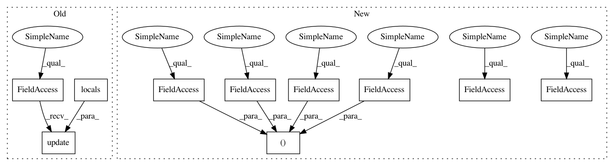

8dd4eea8b9e2a593167671bb8a9633a51fd56f11,pymc/distributions/continuous.py,T,__init__,#T#Any#Any#Any#,287
Before Change
mode = mu
variance = switch((nu > 2) * 1, nu / (nu - 2) / lam, inf)
self.__dict__.update(locals())
def logp(self, value):
nu = self.nu
mu = self.mu
After Change
def __init__(self, nu, mu=0, lam=1, *args, **kwargs):
Continuous.__init__(self, *args, **kwargs)
self.nu = nu
self.lam = lam
self.mean = self.median = self.mode = self.mu = mu
self.variance = switch((nu > 2) * 1, nu / (nu - 2) / lam, inf)
In pattern: SUPERPATTERN
Frequency: 3
Non-data size: 10
Instances
Project Name: pymc-devs/pymc3
Commit Name: 8dd4eea8b9e2a593167671bb8a9633a51fd56f11
Time: 2013-12-10
Author: thomas.wiecki@gmail.com
File Name: pymc/distributions/continuous.py
Class Name: T
Method Name: __init__
Project Name: pymc-devs/pymc3
Commit Name: 8dd4eea8b9e2a593167671bb8a9633a51fd56f11
Time: 2013-12-10
Author: thomas.wiecki@gmail.com
File Name: pymc/distributions/continuous.py
Class Name: Normal
Method Name: __init__
Project Name: pymc-devs/pymc3
Commit Name: 8dd4eea8b9e2a593167671bb8a9633a51fd56f11
Time: 2013-12-10
Author: thomas.wiecki@gmail.com
File Name: pymc/distributions/continuous.py
Class Name: T
Method Name: __init__
Project Name: pymc-devs/pymc3
Commit Name: 8dd4eea8b9e2a593167671bb8a9633a51fd56f11
Time: 2013-12-10
Author: thomas.wiecki@gmail.com
File Name: pymc/distributions/continuous.py
Class Name: Laplace
Method Name: __init__